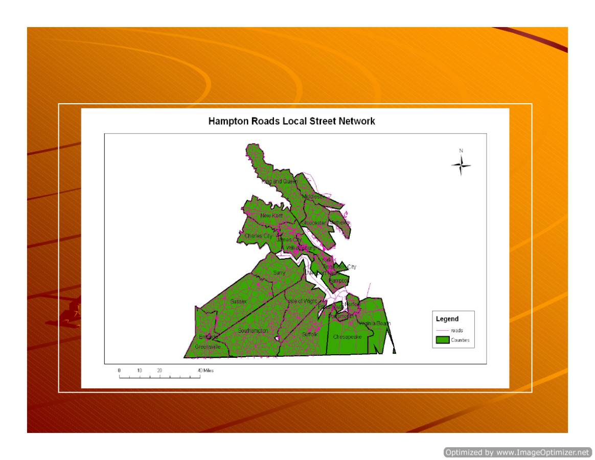
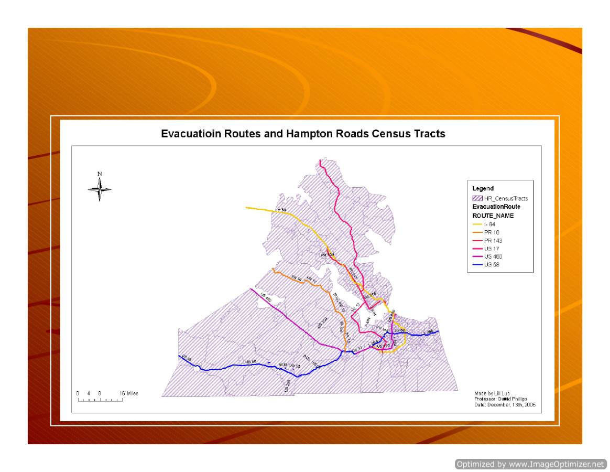
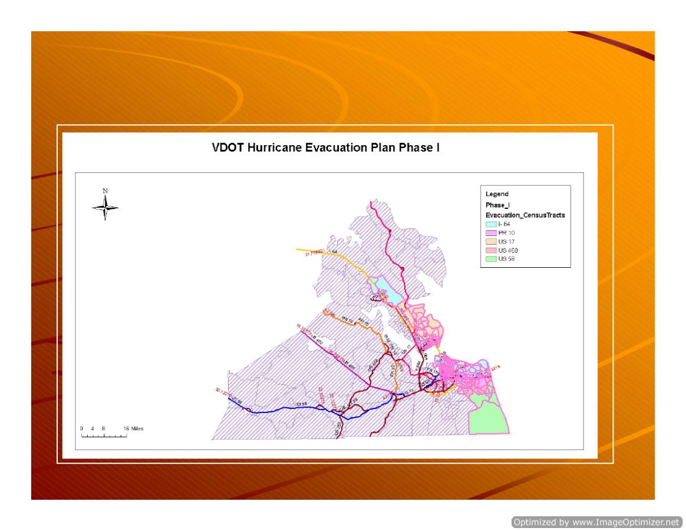
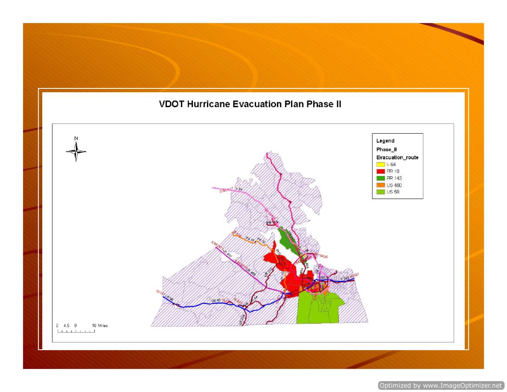
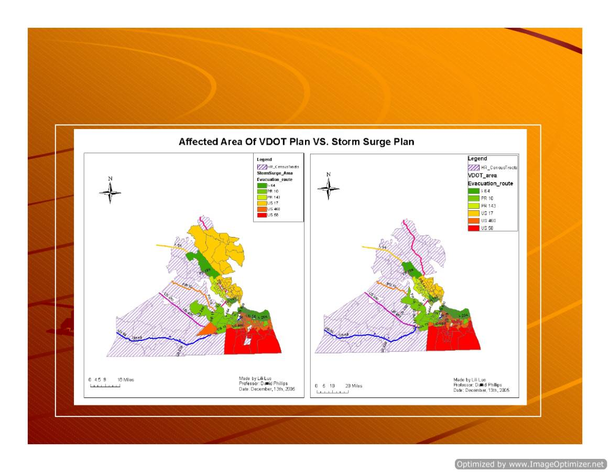
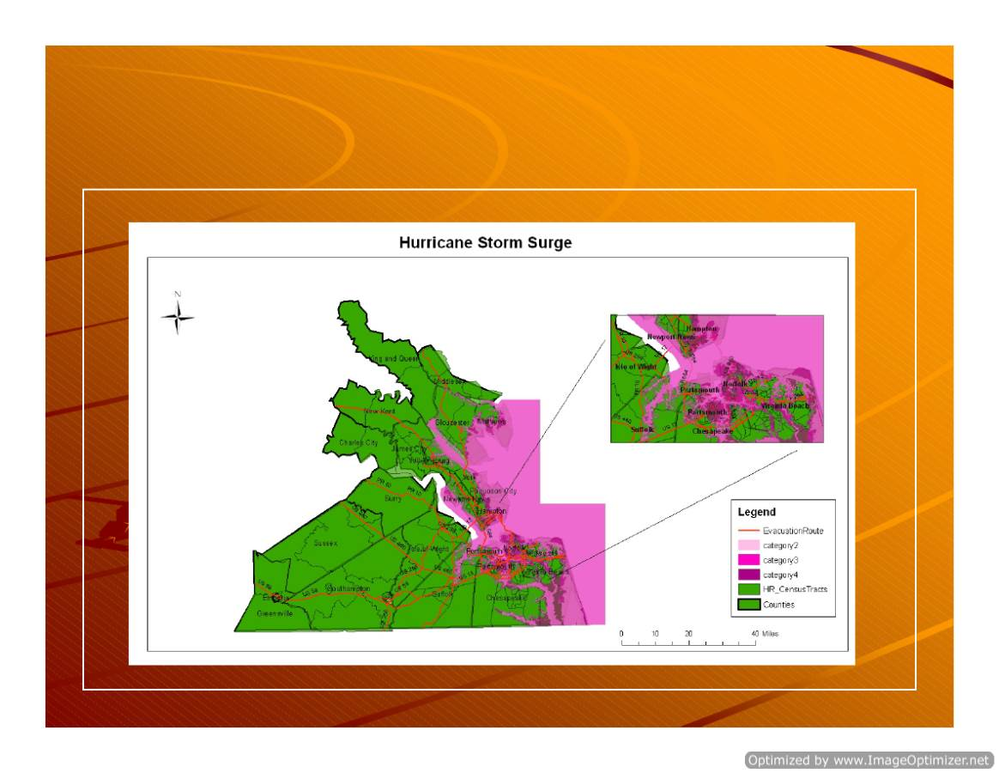
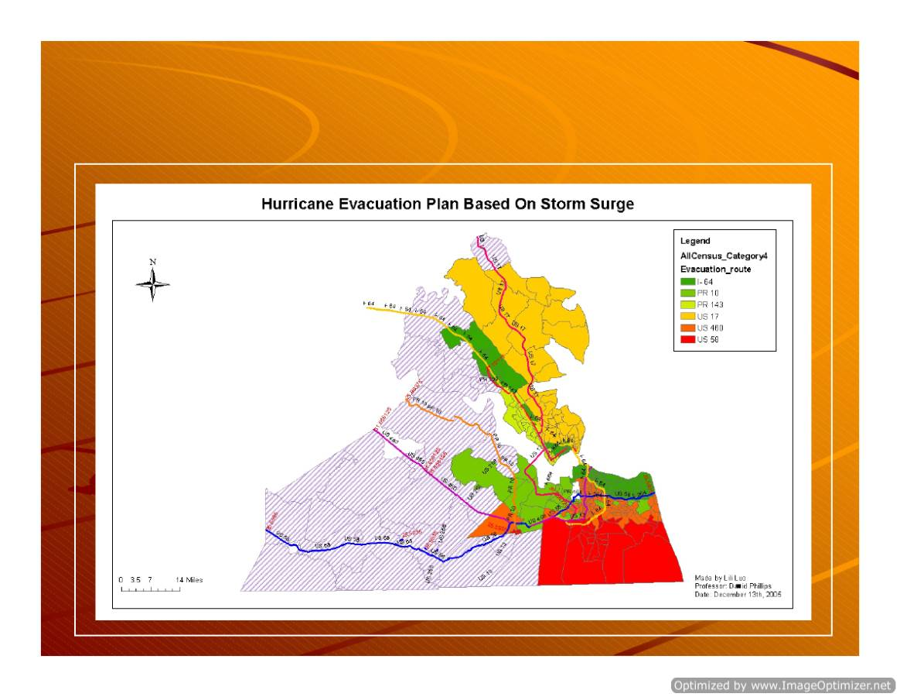

Hampton Roads Hurricane
Hampton Roads Hurricane
Evacuation Plan
Evacuation Plan
Lili
Lili
Luo
Luo
December 15
December 15
th
th
, 2005
, 2005

Hampton Roads Hurricane Evacuation 1/5
Hampton Roads Hurricane Evacuation Project
Lili Luo
Abstract
In this project, Hurricane Evacuation Geodatabase based on Virginia
Department of Transportation evacuation plan as well as based on Storm
Surging Area was developed in ArcGIS. The required evacuation time for major
evacuation corridors was estimated by considering the corridor capacity and
number of evacuation vehicles assigning to these corridors. The performance of
the evacuation plans was measured and recommendations were given.
Purpose and Scope
The purpose of this project is to develop hurricane evacuation plans in
ArcGIS and evaluate the performance of these evacuation plans. Based on the
visualization of the evacuation plan and analysis of the necessary evacuation
time, the governments, emergency agencies and residents of Hampton Roads
would be able to have better preparation when facing the threat of hurricanes
during hurricane season.
It is evident that the storm surge is the most deadly cause of life and
property loss. Therefore, the evacuation plan developed in this project was
mainly based on storm surge.
Data Collection
Four major GIS data was collected from different sources. The shape files
of counties and cities were obtained from VaCounties, which is archived in
GEOSTACKS. The shape files of the census tracts were downloaded from the
Tiger Data. The census table containing number of vehicles in each census tract
were downloaded from http://fisher.lib.virginia.edu/collections/stats/census/#SF3
and converted from excel table to database table in ArcGIS. The local street
network was obtained by merging the roadway network shapefiles of all the
Lili Luo

Hampton Roads Hurricane Evacuation 2/5
counties and cities within the study area. The storm surging area shape files
were provided by US Army Corps of Engineers District. The elevation DEM data
was downloaded from the American fact finder website.
Dedicated evacuation routes and evacuation area were obtained from
Virginia Department of Transportation (VDOT).
Map Development
The Hampton Roads Area includes 23 counties and cities. These counties
and cities were selected from the ‘vacounties’ shape files and exported to form
Hampton Roads Counties Layer. A new field named CountyName was created in
Hampton Roads Counties Layer in ArcCatolog. The names of the counties and
cities were input manually.
The census tracts within the study area were obtained by applying spatial
joint of US census tracts Layer with the Hampton Roads Counties Layer.
In the process of selecting the fields for downloading the census data
containing number of household vehicles, the number of total, self-own and rent
vehicles for each census tract was stored in the fields of H046001, H046002 and
H046003 respectively, but defined as text data type. The Vehicles table was
appended to the attribute table of ‘HRcensustracts’ Layer based on the
census_tract in Arctool box.
Then the new Hampton Roads Census Tracts layer
was created and named as ‘HRcen_vehicle’.
Next, five more fields were added in the attribute table of ‘HRcen_vehicle’.
They are ‘Total_vehicle’, ‘Own_vehicle’, ‘Rent_vehicle’, ‘Demand’ and
‘Evacuation_Route’. ‘Evacuation_Route’ was defined as text data type while the
other four were Long Integer. The ‘Total_vehicle’, ‘Own_vehicle’, ‘Rent_vehicle’
were calculated based on H046001, H046002 and H046003 respectively and just
converted the text into integer.
By Reading the VDOT evacuation plan, the census tracts that need to be
evacuated during Phase I and Phase II were determined. The Suggested
evacuation route for each census tract was also approximated by reading this
document. Then the evacuation route was manually input into the field of
Lili Luo

Hampton Roads Hurricane Evacuation 3/5
‘evacuation_route’ in ‘HRcen_vehicle’ layer. Once the ‘evacuation_route’ was
finished, the demand of each evacuation highway can be determined by
calculating the statistics about the sum of ‘total_vehicle’ by ‘evacuation_route’
and input into the ‘demand’ field. The census tracts need to be evacuated during
phase I and phase II were exported to two other files named ‘Phase I’ and ‘Phase
II’ respectively.
Although many streets were considered as part of the evacuation routes,
the traffic eventually enter six major arterials: I- 64, US 58, US 460, PR 10, PR
143 and US 17. As we all know that the capacity of these highways as well as I-
664, I-264, etc. within the Hampton Roads Metropolitan Area is sufficient
because most of them are four-lane highways in one direction. However, bottle
net is also predictable when these highways enter the western rural area and the
number of lanes was reduced to two lanes in one direction. Therefore, the
capacity of the highways during hurricane evacuation is mainly determined by the
rural part of the highways. The number of lanes of I- 64, US 17, PR 143, PR 10
and US 58 used in this project was 2 to represent this consideration. US 460 has
been expanded to four-lane highway to the west of Richmond. Therefore, the
total number of lanes of US 460 is defined as 4 in this project. It is also noted that
among the five two-lane per direction highways, only I- 64 is interstate highway,
which makes it possible to reverse I- 64 Eastbound to double the capacity and
accelerate the evacuation. It was also important to adopt different values of
capacity per lane for different types of highways. The capacity of 2400 vehicles
per lane per hour was used for Interstate Highway and 2000 vehicles for other
arterials.
There is no readily available street network for the entire Hampton Roads
Area. As a result, the street networks for all the counties and cities of this area
were obtained and merged to form the Hampton Roads Street Networks named
‘roads’. Then the evacuation routes specified by VDOT was selected and
exported to a new layer ‘EvacuationRoute’. Similarly, another file named
‘EvacuationTime’ is formed by simply copying the layer file of ‘EvacuationRoute’.
Lili Luo

Hampton Roads Hurricane Evacuation 4/5
Then four fields were added into ‘EvacuationTime’: ‘number of lanes’,
‘PhaseI_time’, ‘Phase_II’ and ‘EvacuationTime_StormSurge’.
Then, joint by attribute was applied to joint the ‘EvacuationTime’ and
‘Phase I’ based on ‘Route_Name’ and ‘EvacuationRoute’. The ‘PhaseI_time’ in
‘EvacuationTime’ can then be calculated by PhaseI_time=Demand/ number of
lanes/capacityperlaneperhour. Since I- 64 eastbound will be reversed during
emergency evacuation. The above equation will be further divided by 2 for I- 64.
Similar procedure was carried out to obtained phase II.
After completing the analysis on the VDOT evacuation Plan, the
evacuation strategy solely based on the storm surge affected area was
performed. The census tracts that need to be evacuated were obtained by spatial
joint with the surge area of Category 2, 3 and 4 hurricanes. It was found out that
although the affected area of different categories of hurricane is different, the
affected census tracts remain the same. Thus, the evacuation plan based on
storm surge was performed only once by assuming that all the residents are
required to be evacuated under the threat of a category 4 or above hurricane. It
is a reasonable assumption because the evacuation demand will put the heaviest
burden on current highway facilities in this circumstance.
Finally, the Dem data reflecting the elevation was obtained. Each county
or city contains about 5 to 10 Dem data. All of this data was converted into raster
data first. Then the raster data for entire area was created by using mosaic raster
data in Arctoolbox. Then the raster data was further converted into TIN data.
The corresponding Geodatabased was created. A simple 3D scene as
well as a series of thematic maps was created to illustrate the affected area and
evacuation plan. The summary table of the evacuation plan was summarized in
‘Sum_vehicle_storm_surge’,
‘Sum_vehicle_Phase_I’ and
‘Sum_vehicle_Phase_II’.
Findings and Recommendations
It is interesting to see that the VDOT evacuation plan neglect some
census tracts in Mathews, Gloucester and Middlesex that are under the threat of
Lili Luo

Hampton Roads Hurricane Evacuation 5/5
storm surge. In VDOT’s evacuation plan, it is stated the evacuation begins 24
hours prior to the onset of tropical storm force winds. The second phase will
begin 14 hours prior to the onset of tropical storm force winds. However, it was
shown that only the residents within phase I area were able to evacuate in 24
hours due to the limitation of the roadway capacity. It is also important to allow
enough time for VDOT to reverse I- 64 Eastbound before the evacuation starts.
Due to the recent development of the southern part of Hampton Roads area such
as Chesapeake and Virginia Beach, the growth of the population resulting in
longer evacuation time in US 460 and US 58. Different assignments of the
evacuation route for different census tracts were tried. The final map shows a
relatively balanced assignment. In long term, it is recommended to upgrade the
US 460 or US 58 to interstate level so that the populated area of southern
Hampton Roads can be evacuated promptly. It is also recommended to expand
the local street network of Chesapeake so that people can have more convenient
access to US 58 and US 460.
The general version of ArcGIS is more appropriate for planning as what
has been done in this project. Although it does not provide the lane specific
roadway, the analysis results of this study can be applied into traffic simulation
software to perform more detail operation analysis.
Lili Luo
Reasons for the topic
Reasons for the topic
Great loss in Katrina
Great loss in Katrina
Panic and chaotic evacuation during
Panic and chaotic evacuation during
Rita
Rita
More detail evacuation plan is
More detail evacuation plan is
needed for Hampton Roads
needed for Hampton Roads
Serve as groundwork for operation
Serve as groundwork for operation
analysis
analysis

Hampton Roads Jurisdictions
Hampton Roads Jurisdictions

Hampton Roads
Hampton Roads
Evacuation Routes
Evacuation Routes

VDOT Phase I
VDOT Phase I

VDOT Phase II
VDOT Phase II

VDOT Plan Vs. Storm Surge Plan
VDOT Plan Vs. Storm Surge Plan

Storm Surge Affected Area
Storm Surge Affected Area

Storm Surge Plan
Storm Surge Plan
Recommendations
Recommendations
48 hours prior to the onset of the
48 hours prior to the onset of the
tropical winds are required if the
tropical winds are required if the
entire population is evacuated
entire population is evacuated
Careful assignments are required to
Careful assignments are required to
balance the demand and capacity
balance the demand and capacity
In long term, upgrade the US 460 or
In long term, upgrade the US 460 or
US 58 to interstate highway
US 58 to interstate highway
expand the local street network of
expand the local street network of
Chesapeake
Chesapeake
Document Outline